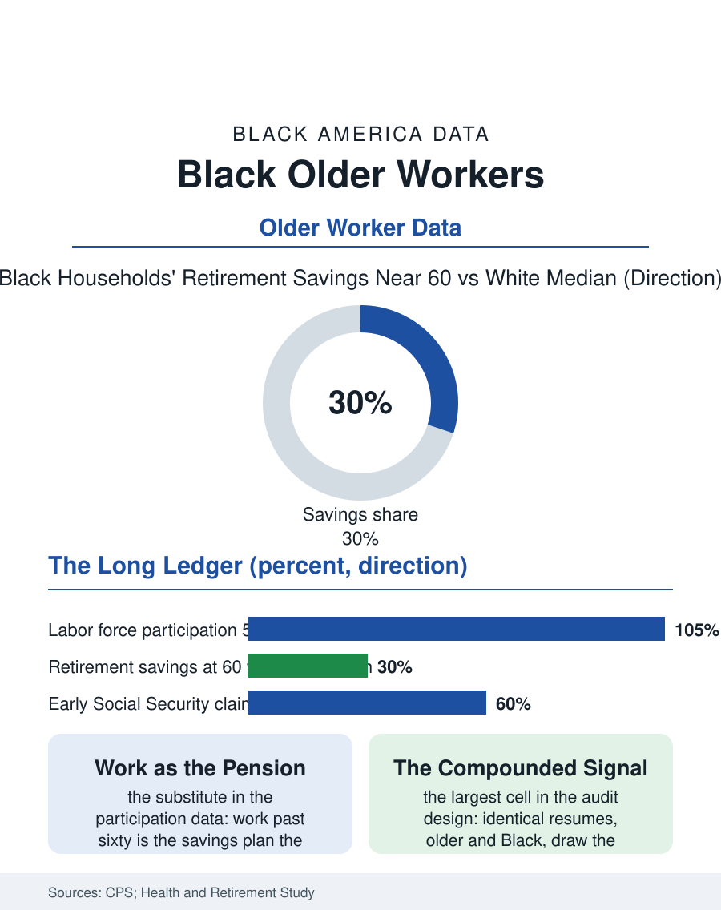

Black Employment
The Long Ledger: Black Older Workers
Working longer from less, early claiming at the discount, and the audit studies' deepest penalty cell. The older workers file.

The older Black worker, fifty-five and beyond, holds the employment file's longest ledger: the highest labor force attachment of the older demographics in the survey data, the thinnest retirement balances in the wealth file, and an age discrimination exposure that the audit studies measure compounding the race's, in the years when the body's trades begin to bill the worker for their decades. This article reads the older workers file.
Working Longer, From Less
The participation data give the file its shape: Black workers remain in the labor force at older ages at rates above the white figure through the sixties, a pattern the retirement wealth file explains without remainder, the median Black household approaching sixty with retirement savings a fraction of the white median's, so that the work's continuation is the savings plan's substitute, and the Social Security claiming data's early-claiming concentration, the benefit taken at sixty-two at the permanent discount, records the same arithmetic from the other side, the body and the layoff deciding what the balance sheet could not fund. The occupation file's physicality is the older worker's tax schedule: the warehousing and care and cleaning workforces' older members carry the cumulative musculoskeletal ledger the arthritis file totals, and the disability file's claims spike in the late fifties is the labor market's exit ramp for the trades' veterans, its racial incidence the compound of the occupation's distribution and the claim's adjudication file. The pension file's public tier deserves its sentence here, because the municipal and state retirements, the public file's defined benefits, are the older Black worker's one mass exception to the savings file's arithmetic, the retired teacher's and transit worker's pension being the community's modal secure old age, which is why the public pension's politics, the benefit's defense in the statehouses, is the older Black voter's economics stated as a platform, and why its erosion in the new hires' tiers is this file's forward datum.
The Audit Studies' Older Finding
The age discrimination research gives the file its experimental core: the correspondence studies, the resumes identical but for the age's signals and the name's, find the older Black applicant's callback penalty the design's largest cell, the intersection the literature has been slowest to power its studies to detect and the most consistent when it does. The displacement file is the older worker's catastrophe: the layoff at fifty-eight in the displacement surveys is followed by the longest unemployment durations and the deepest re-employment wage cuts of any age's, the bridge job and the early claim being the standard sequels, and the Black displaced worker's durations in the surveys run ahead of the white displaced worker's at every age in the pattern that requires no new mechanism beyond the files already counted. The encore and bridge economy, the retirement job's formalization in the retail and school and nonprofit files, employs the older Black worker at the service tier's wages, the pension plus the part-time's arithmetic being the household's actual retirement plan in the modal case the surveys describe.
The Ledger's Closing Years
The older workers file closes on the policy file that prices the ledger: the retirement age's politics, the benefit formula's progressivity being one of the system's few instruments whose incidence runs in the Black worker's favor, the earnings test and the delayed credit's arithmetic being read, in the community's kitchen-table version, against the life expectancy file's numbers with a precision the actuaries respect. The caregiving file intersects at the decade's turn, the older worker frequently the grandchild's and the parent's simultaneous support, the sandwich of the family file's accounting, her labor force participation funding both directions of care. The surveys count the participation each month. The file's last entry is the sixty-three-year-old on the warehouse's line and the school's crossing post in the same week, the two jobs and the early claim composing the retirement the balance sheet describes, working, in the data's plainest reading, not from the failure to plan but from the plan the wages across a lifetime of the files above this one actually permitted. The crossing post's other regular is the grandchild she will walk home at three, the second shift of the ledger's closing years, unpaid and, by her own accounting in the interviews, not the part she would trade.
More in Black Employment
The Black Unemployment Rate: The Two-to-One Pattern
Black unemployment runs at roughly twice the White rate — 5.5 percent against 3.3 percent in annual averages — a ratio stable across five decades of federal data. How it is measured and why it persists.
Black Median Weekly Earnings: The 80-Cent Ratio
Black full-time workers earn a median of about $900 a week — roughly 80 cents for every dollar White workers earn. The BLS earnings data by group, gender, and occupation.
Black Labor Force Participation: Working at National Rates
Black labor force participation runs at roughly the national rate — and Black women participate at higher rates than White women. The BLS participation data.
Source: Current Population Survey labor force data; Health and Retirement Study; age and race correspondence audit studies.